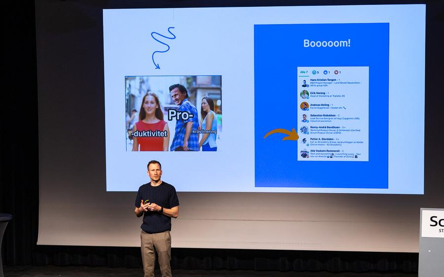

Tekst som treffer
All tekst som skal treffe øynene til kundene dine, bør aldri overlates til tilfeldighetene. Ord som «kvalitet» og «fleksibilitet» er lette å strø om seg med, men virker de egentlig? La oss finne ordene som får folk til å føle noe.
- Nettsider
- Sosiale medier
- Landingssider
- Pressemeldinger
- Artikler
- Tilbud til kunder
Video og innhold
Film og sosiale medier som viser folkene bak bedriften, ikke bare logoen. Produktene du selger knytter vi sammen med strategisk historiefortelling. Skal filmen treffe flere enn dem som allerede følger dere, kjører vi den som annonse mot riktig område og riktig folk.
- Film
- Annonsering
- Sosiale medier
LinkedIn for ledere og ansatte
Den viktigste plattformen for B2B, men hvordan funker den egentlig? Jeg har hjulpet titalls ledere og ansatte med å nå ut til hundretusenvis, skaffe nye leads, få medieomtale og bygge tillit på LinkedIn. Mange av dem skriver ikke selv. Da er det jeg som skriver innleggene, i deres stemme, og de leser gjennom før noe publiseres.
Strategi
Hva skal bedriften din eie, hvem skal si det, og hvorfor skal noen i det hele tatt bry seg? Ved å bruke tid på en tydelig strategi sørger vi for at du løper i riktig retning.

Jeg holder også foredrag.
Om synlighet, personlig merkevare og hvordan man høres ut som et menneske når alle andre bruker KI. Det passer på konferanser, kickoff, ledersamlinger og fagdager. I 2025 ble jeg kåret til Årets stjerneskudd på Norges største LinkedIn-konferanse.
Spør om en datoEtter å ha tatt kurset «Min LinkedIn stemme», og deretter fulgt rådene til Erlend steg for steg, fikk mitt første innlegg nesten 40 000 visninger og 300 kommentarer. Siden har jeg lært mye og fått mange tips av å følge Erlend på LinkedIn.
Vi inviterte Erlend til å holde et innlegg for toppledere og kommunikasjon/markedsavdelingene i hele konsernet (i 6 land), og tilbakemeldingene var at tipsene var både nyttige og konkrete for hvordan vi bedre kan lykkes med LinkedIn som kanal for ledere for å bygge troverdighet til egen profil og styrke troverdighet til bedriften vi leder/representerer.
Usikker på hvor du skal begynne? Det er som regel der jeg begynner også.
Ring, eller send en e-post med to setninger om hva dere driver med. Så sier jeg ærlig hva jeg tror er verdt pengene, og hva som ikke er det.